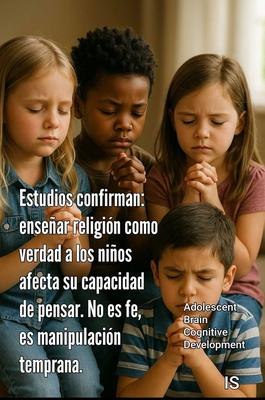

Veamos lo que dice la ciencia: los profesionales que trabajan con niños conocen, desde la psicología del desarrollo, lo delicado y sorprendentemente frágil que es el proceso de formación del pensamiento crítico. Por lo que no pueden evitar alarmarse al observar el adoctrinamiento rígido, literalista, inflexible y emocionalmente cargado, que se observa en grupos religiosos fundamentalistas: en muchas sectas evangélicas o en entornos ultraconservadores, como las madrazas (escuelas coránicas) musulmanas, donde los niños memorizan textos sagrados durante horas sin ningún proceso de comprensión racional, o las Talmud Torá, escuelas donde los judíos adoctrinan a sus niños. Incluso, tradicionalmente los judíos comienzan a adoctrinarlos a partir de los tres años, poniéndolos a recitar las bendiciones de las distintas comidas y algunas plegarias básicas. Apenas el niño aprende a hablar, le enseñan pasajes claves de la Torá (el Pentateuco) y el Shemá (una de las principales plegarias de la religión judía).


A los psicólogos infantiles, estas formas de tradición religiosa los dejan con la boca abierta. Pero para poder evaluar objetivamente sus efectos, suelen acudir a análisis como el Adolescent Brain Cognitive Development Study® (ABCD Study®), que proporciona prácticamente un mapa científico del cerebro en crecimiento. Se trata de un gigantesco estudio financiado por los Institutos Nacionales de Salud (National Institutes of Health, NIH) de Estados Unidos, y que ha dado seguimiento desde 2016, a casi 12.000 niños desde los 9 o 10 años, evaluando aspectos como su desarrollo cerebral (mediante neuroimagen), su rendimiento cognitivo, su salud mental, sus conductas, y su entorno familiar, cultural y social. Por lo que podemos decir que el ABCD Study® es la radiografía científica más completa jamás hecha sobre cómo se desarrollan los cerebros infantiles.
Y dentro de esta enorme base de datos, algunos investigadores han analizado el papel de la religiosidad familiar en el desarrollo cognitivo de los niños, partiendo de la intensidad de las creencias religiosas de los padres. Los resultados fueron claros: aunque no se encontró que los niños criados en hogares muy religiosos perdieran su capacidad de pensar, se observó que, en promedio, su desarrollo cognitivo estuvo relacionado con ciertas reducciones en habilidades clave para el pensamiento crítico.
Es decir, si bien no se demuestra que los niños criados en ambientes muy religiosos experimenten una neutralización total del pensamiento crítico, ni que todas las religiones o formas de creencia produzcan los mismos efectos, o que exista una causalidad absoluta entre el adoctrinamiento y la reducción del razonamiento analítico, sí se evidencia una manipulación mental que es dañina para el desarrollo del análisis racional, cuando los niños no poseen todavía el andamiaje cognitivo para distinguir entre una creencia y la realidad, y se les transmite la religión como un dogma absoluto, impermeable a la duda, y acompañado de premios emocionales (amor, aceptación divina), y castigos (culpa, vergüenza, miedo al infierno). Esto, porque el pensamiento de los niños es concretista, literal, y altamente sugestionable.
Por tanto, aunque el adoctrinamiento religioso se realice con buenas intenciones, se convierte en una forma temprana de manipulación cognitiva cuando a los niños se les inculcan ideas que no pueden cuestionar, que están acompañadas de una sanción emocional, o que se presentan como verdades indiscutibles. Y esto, lamentablemente, es frecuente en casos como:
Sectores del cristianismo fundamentalista, donde se exige creer sin dudar, aceptar la autoridad pastoral y rechazar el pensamiento crítico como una «tentación».
Grupos evangélicos pentecostales, que usan el miedo, las «visiones», el «enemigo espiritual» y el emocionalismo, como herramientas pedagógicas.
Madrazas islámicas tradicionales, donde los niños memorizan el Corán durante horas sin comprensión ni debate, reforzando obediencia absoluta y pensamiento rígido.
Las Talmud Torá o escuelas judías, donde los niños son inducidos tempranamente a la lectura de la Torá y otros textos sagrados como los Profetas, además de los principios de la Halajá (la ley judía), y conocimientos del idioma hebreo. Y a veces también se les inicia en el estudio del Talmud y otros comentarios rabínicos.
En estos entornos, el desarrollo cognitivo de los niños se ve limitado, no tanto porque la religión sea dañina en sí misma, sino por la forma fanática o radical en que se administra.
¿Qué es entonces lo mejor para los niños respecto a las religiones? —Desde la psicología infantil, desde la neurociencia del desarrollo, y desde el sentido común basado en evidencia, la postura es clara: Lo ideal es NO adoctrinar religiosamente a los niños en edades tempranas, no tanto porque la religión sea inherentemente mala, sino porque:
El pensamiento crítico aún no está formado.
El cerebro infantil es extremadamente influenciable.
La distinción entre símbolo y literalidad tarda años en desarrollarse.
Los niños merecen aprender cómo pensar, no qué pensar.
Los adultos pueden creer en lo que quieran, pero el niño necesita espacio para explorar, preguntar, dudar, y construir criterios propios. Cuando los niños lleguen a la adolescencia —cuando sus funciones ejecutivas estén más maduras—, podrán decidir libremente si quieren practicar una religión, rechazarla o reinterpretarla. En eso consiste la verdadera libertad de conciencia. Lo demás es condicionamiento emocional encubierto de fe.
En conclusión, aunque la ciencia no diga explícitamente que enseñar religión destruye la mente de un niño, sí sugiere que imponer creencias rígidas en edades tempranas puede estar asociado a un desarrollo más pobre en habilidades esenciales para el pensamiento crítico.
Pero más allá de eso, la psicología del desarrollo infantil nos recuerda que todo niño tiene derecho a razonar, a cuestionar, a dudar, y a desarrollar su propia visión del mundo. Por tanto, imponerle una cosmología religiosa antes de que tenga una mente capaz de analizarla, no es educación, es programación ideológica —por no decir lavado cerebral—. Por tanto, en definitiva, la religión debe ser una elección adulta, no un molde impuesto sobre una mente que aún está aprendiendo a pensar.
[Godless Freeman]
[Crédito de imagen: Ivelisse Serpa]
Comentarios
Comments powered by Disqus